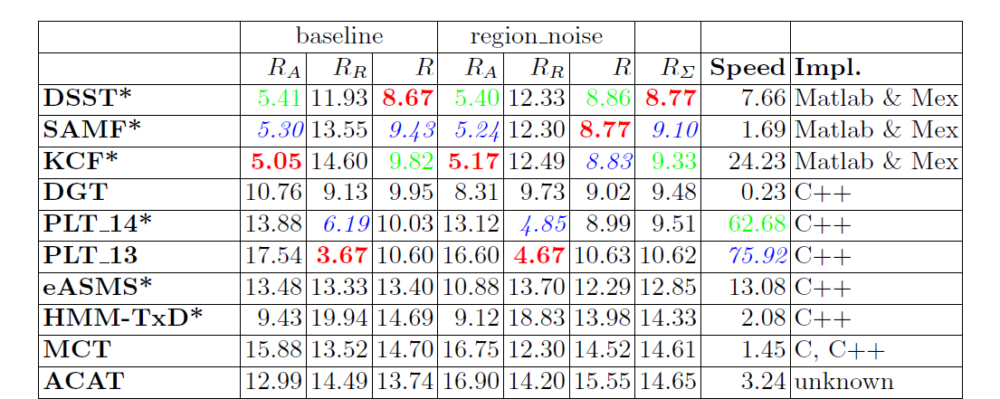

相关滤波器(Correlation Filters)
Contents[-]
介绍
在开始介绍相关滤波之前，我们先看看VOT 2014前十名的算法：

Figure 1. VOT 2014前十名。
其中排在前三位的算法DSST[1]，SAMF(多种方法的整合，无对应的公开发表论文)，KCF[2]都是基于相关滤波的。从排名我们可以看出相关滤波在目标追踪领域有着非常出彩的效果。那么到底什么是相关滤波呢？对此我们按照相关滤波的历史发展过程进行讲解。
原理
总结
引用
- [1]M. Danelljan, G. Häger, F. S. Khan, and M. Felsberg, “Accurate scale estimation for robust visual tracking,” in Proceedings of the British Machine Vision Conference BMVC, 2014.
- [2]J. F. Henriques, R. Caseiro, P. Martins, and J. Batista, “High-Speed Tracking with Kernelized Correlation Filters,” Pattern Analysis and Machine Intelligence, IEEE Transactions on, 2015.